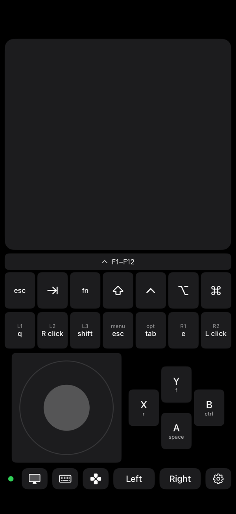

Couchpad
Your iPhone as a trackpad and keyboard for your Mac or Windows PC.
Beta. iPhone app in public TestFlight ahead of its free App Store release. Mac companion 1.7 is out: the picture keeps going with a MacBook's lid closed.
The computer is plugged into the TV, you're on the couch, and your phone is the mouse, the keyboard and the controller. Turn on the screen and it's the monitor too.
No account, no server, nothing to configure. Pair once by scanning a code; after that the phone finds the computer on its own, and everything between them is encrypted. Put both on a VPN and it works from anywhere.

Trackpad and keyboard
Tap, two-finger scroll, drag, right-click, three-finger swipes. The iPhone keyboard plus the keys it lacks, in a row on screen (on by default; the ⌘ button in the bar hides and shows it): esc, tab, fn, ⇧ ⌃ ⌥ ⌘, F1–F12. Modifiers stay held so ⌘C just works.
A controller on screen
A stick, A B X Y and eight programmable keys under the picture, like a hand-held console. Presets for FPS, MapleStory and arrow-key games, or bind any key yourself. A Backbone or Bluetooth controller works the same way. See it →
The Mac's screen on the phone
Hardware HEVC at up to 60 fps, sent so a lost packet skips a frame instead of freezing. The trackpad keeps working on top of the picture, it stays smooth when a game goes fullscreen, the Mac's sound comes along (Mac 1.6), and it keeps going with a MacBook's lid closed (Mac 1.7). How it works →
From anywhere
Both devices on Tailscale or any VPN, type the computer's address into its profile once, and the phone switches to it by itself when it's away from home, over cellular, screen included. Still no server in the middle. Set it up →
Get Couchpad
| iPhone | Join the TestFlight beta — free, iOS 17 or later. Install Apple's TestFlight app, open the link on your phone, tap Install. |
|---|---|
| Mac | Download Couchpad 1.7 — free, signed and notarized, macOS 13 or later. Lives in the menu bar; needs Accessibility permission once. New in 1.7: the picture keeps going with a MacBook's lid closed, on the charger. Since 1.6 the Mac's sound plays on the phone with the picture (needs iPhone 1.3). |
| Windows | Free, builds from source with the .NET 8 SDK. Instructions. Looking for its first real-world test report. |
Set up
Install the companion on the computer and allow it once (Accessibility on macOS, firewall on Windows). Open Couchpad on the phone on the same Wi‑Fi: it finds the computer. Choose "Pair an iPhone…" from the menu-bar or tray icon and scan the QR code. Done; the phone never asks again.
Private by design
Only a phone you paired can send input, and you can forget it any time. The pairing code lives for a minute and allows one guess per connection. Every session starts with a fresh key exchange and is encrypted end to end; the phone never sends its token or the code, it proves it holds them. There is no account, no cloud and no relay. The full design, and the code, are open to check. Couchpad collects no data: privacy policy.